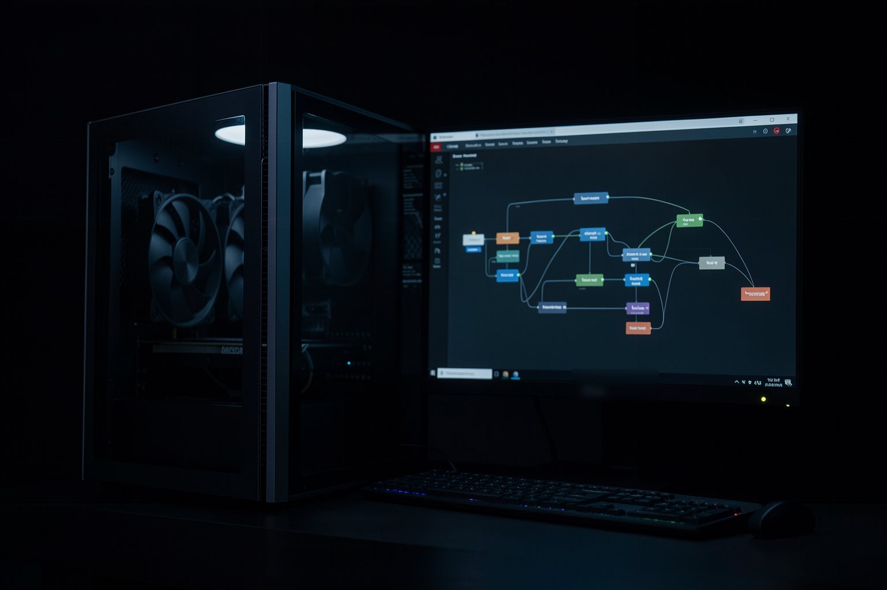

Formación Cine con IA · curso 1 de 6 · 8 clases
Generación: del storyboard al clip con los generadores de oct/2026
Qué generador usar en cada plano, cómo escribir el prompt con sonido, por qué la imagen clave va antes del video y cómo mantener al mismo personaje entre planos. Cada clase termina en un archivo o en un clip que la propia página verifica. Para generar usas la herramienta que tengas, de pago o abierta.

- 8clases
- 8entregas verificadas en la página
- 0crédito gastado por el curso
- 7generadores en la tabla del 19/10/2026 (+ el caso Sora)
Las clases
La escena del curso 0 continúa: "La primera hornada". Aquí el storyboard de Doña Lia se convierte en stills, clips y una lista de prompts; tú haces lo mismo con el tuyo.
 Clase 1 · 18 minEl mapa de los generadores en oct/2026 y cómo elegirEl generador de video cambia de versión cada pocos meses y a veces desaparece, como Sora. Por eso la elección no empieza por el ranking: empieza por lo que pide tu plano. Duración, diálogo, referencia y licencia deciden; la tabla con fecha solo muestra quién cumple hoy.
Clase 1 · 18 minEl mapa de los generadores en oct/2026 y cómo elegirEl generador de video cambia de versión cada pocos meses y a veces desaparece, como Sora. Por eso la elección no empieza por el ranking: empieza por lo que pide tu plano. Duración, diálogo, referencia y licencia deciden; la tabla con fecha solo muestra quién cumple hoy. Clase 2 · 17 minAnatomía del prompt de video: sujeto, acción, cámara, luz y sonidoEl prompt de video es la línea del desglose de planos escrita para la máquina. Quién es, qué hace, dónde, cómo lo ve la cámara, qué luz y qué se oye. Desde que el sonido empezó a salir junto con la imagen, también entra en el prompt, en una frase aparte.
Clase 2 · 17 minAnatomía del prompt de video: sujeto, acción, cámara, luz y sonidoEl prompt de video es la línea del desglose de planos escrita para la máquina. Quién es, qué hace, dónde, cómo lo ve la cámara, qué luz y qué se oye. Desde que el sonido empezó a salir junto con la imagen, también entra en el prompt, en una frase aparte. Clase 3 · 18 minImagen clave primero: still cinematográfico y lookbookAntes de animar, acierta con la foto. Una imagen sale en segundos, así que pruebas el look varias veces y solo llevas al video el cuadro aprobado. El lookbook guarda la receta de ese look en un prompt base que entra igual en todos los stills de la escena.
Clase 3 · 18 minImagen clave primero: still cinematográfico y lookbookAntes de animar, acierta con la foto. Una imagen sale en segundos, así que pruebas el look varias veces y solo llevas al video el cuadro aprobado. El lookbook guarda la receta de ese look en un prompt base que entra igual en todos los stills de la escena. Clase 4 · 19 minDe la imagen al movimiento: imagen a video y primer/último fotogramaCon el still aprobado, el generador ya sabe quién, dónde y con qué luz. El prompt ahora solo dice lo que cambia: el movimiento de la cámara, la acción y el sonido. Con primer y último fotograma, también decides dónde termina el plano. Y antes de seguir, la página verifica el clip.
Clase 4 · 19 minDe la imagen al movimiento: imagen a video y primer/último fotogramaCon el still aprobado, el generador ya sabe quién, dónde y con qué luz. El prompt ahora solo dice lo que cambia: el movimiento de la cámara, la acción y el sonido. Con primer y último fotograma, también decides dónde termina el plano. Y antes de seguir, la página verifica el clip. Clase 5 · 18 minConsistencia por referencia: personaje, objeto y estilo entre planosUno de los errores más visibles en el video con IA es el personaje que cambia de rostro entre un plano y otro. Los generadores de 2026 aceptan imágenes de referencia, cada uno con un nombre y un límite. El método es el mismo en todos: imagen de referencia, descripción bloqueada, look fijo y último fotograma heredado.
Clase 5 · 18 minConsistencia por referencia: personaje, objeto y estilo entre planosUno de los errores más visibles en el video con IA es el personaje que cambia de rostro entre un plano y otro. Los generadores de 2026 aceptan imágenes de referencia, cada uno con un nombre y un límite. El método es el mismo en todos: imagen de referencia, descripción bloqueada, look fijo y último fotograma heredado. Clase 6 · 17 minVarios planos y diálogos en una sola generación: multishot y diálogoEn 2026, algunos generadores hacen varios planos con cortes en una sola generación, manteniendo personaje y luz, y ya ponen el diálogo en la boca de quien habla. Eso ahorra empalmes, pero exige un guion más preciso: planos numerados, quién dice qué y cuánto dura cada uno.
Clase 6 · 17 minVarios planos y diálogos en una sola generación: multishot y diálogoEn 2026, algunos generadores hacen varios planos con cortes en una sola generación, manteniendo personaje y luz, y ya ponen el diálogo en la boca de quien habla. Eso ahorra empalmes, pero exige un guion más preciso: planos numerados, quién dice qué y cuánto dura cada uno.
Clase 7 · 18 minEl camino abierto: ComfyUI con LTX y Wan 2.2, VRAM y licenciaUn modelo abierto corre en tu máquina, sin crédito por generación y sin depender de que una plataforma esté en línea. A cambio, pide una tarjeta de video con memoria, disco libre y leer la licencia. Esta lección te ayuda a decidir si tu máquina lo corre y qué modelo y plantilla usar en ComfyUI. Clase 8 · 20 minTu generador de prompts: del storyboard a la lista de prompts con un agenteEscribir ocho prompts a mano, con el mismo look y el mismo bloqueo, cansa y deja espacio para el error. Un asistente de IA con reglas claras hace el borrador de toda la lista a partir del storyboard del curso 0. Tú lo revisas, la página lo verifica, y la lista sirve para cualquier generador.
Clase 8 · 20 minTu generador de prompts: del storyboard a la lista de prompts con un agenteEscribir ocho prompts a mano, con el mismo look y el mismo bloqueo, cansa y deja espacio para el error. Un asistente de IA con reglas claras hace el borrador de toda la lista a partir del storyboard del curso 0. Tú lo revisas, la página lo verifica, y la lista sirve para cualquier generador.
Para quién es
- 1Quien hizo el curso 0 (Dirección) o ya genera imágenes con IA.
- 2Creadores, profesores y quienes hacen video para empresas.
- 3Quien no usa terminal: todo se hace en el navegador; la clase 7 usa ComfyUI, que tiene ventana.
Lo que sales sabiendo hacer
- 1Elegir el generador según lo que pide el plano, con la fecha de la elección.
- 2Escribir prompts de video con cámara, luz, sonido y diálogo.
- 3Generar primero la imagen clave y animar a partir de ella.
- 4Llevar la lista de prompts de tu escena a cualquier generador.
La formación (6 cursos)
- 10 · Dirección
- 21 · Generación (este curso)
- 32 · Producción: del guion a la película terminada
- 43 · Motion por código con agente
- 54 · La fábrica de video con agentes
- 65 · Sitios cinematográficos